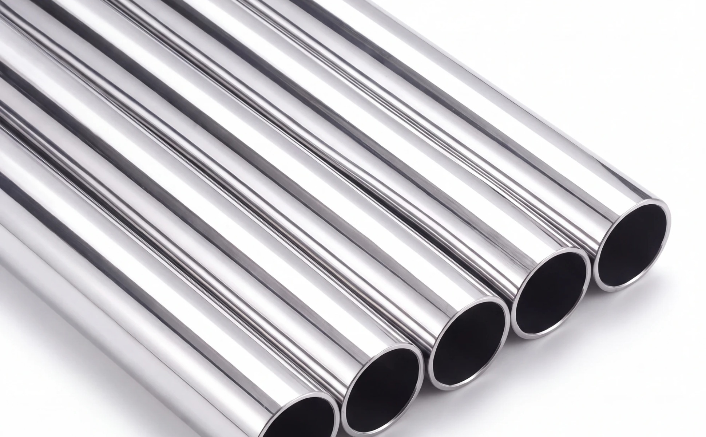
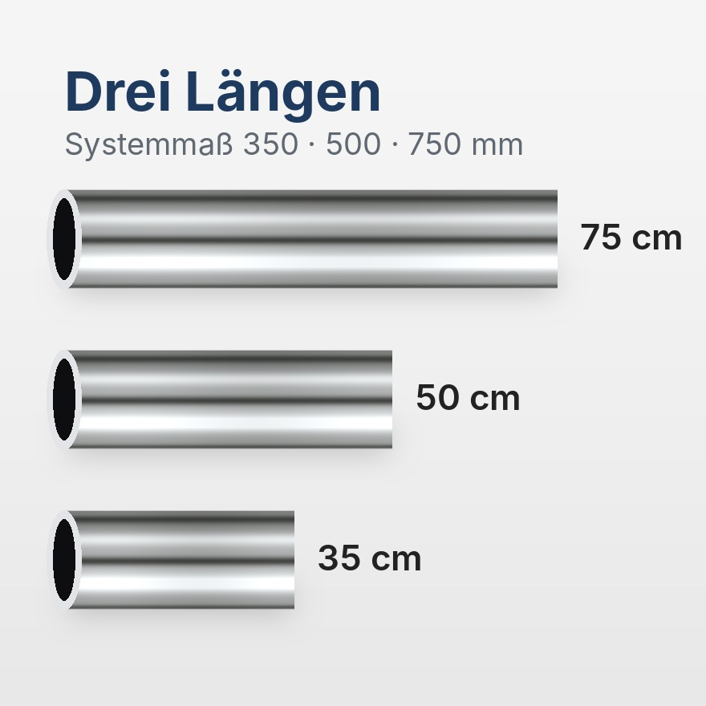
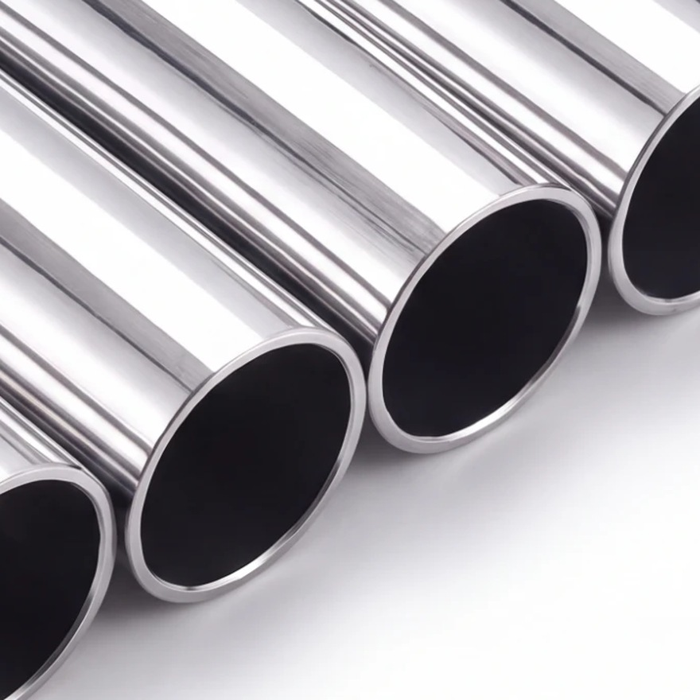
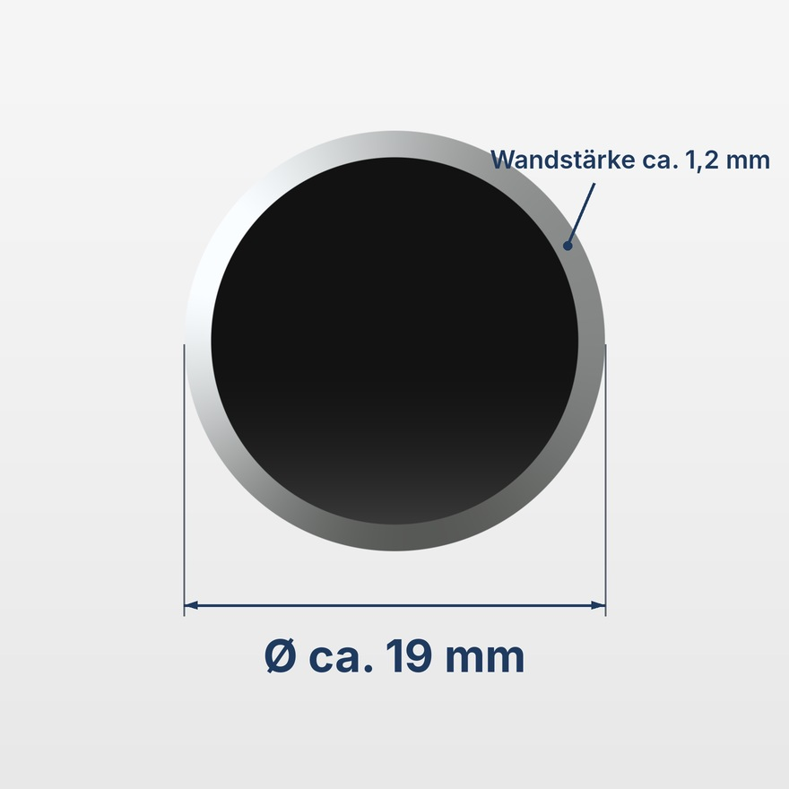
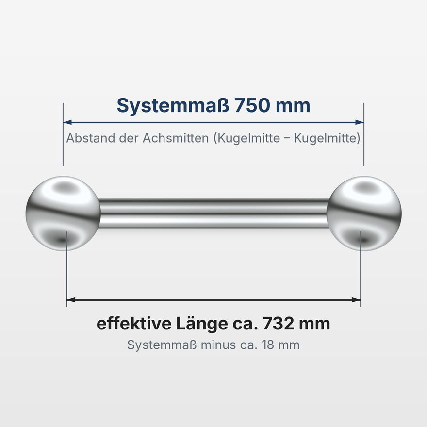
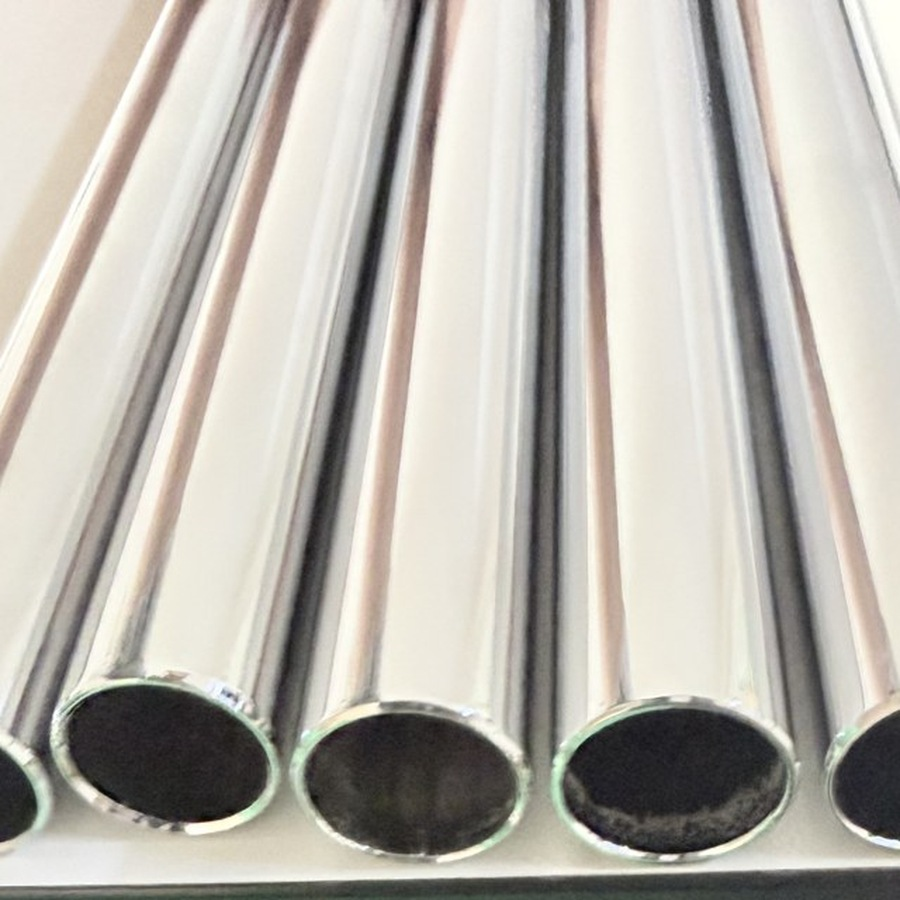

Verchromtes Präzisionsstahlrohr als Ersatz- oder Erweiterungsrohr für Möbel mit USM-Haller-System: wählbar in 35, 50 und 75 cm Systemmaß, mit einheitlichem Durchmesser von ca. 19 mm und glänzender Chromoberfläche.

35 cm, 50 cm oder 75 cm Systemmaß: Wählen Sie die Länge, die zu Ihrem Möbel passt. Für größere Aufbauten bestellen Sie einfach mehrere Rohre.

Das Rohr besteht aus Präzisionsstahl mit glänzender Chromoberfläche und gleichmäßiger Wandstärke von ca. 1,2 mm für ein sauberes Erscheinungsbild.

Außendurchmesser ca. 19 mm, Wandstärke ca. 1,2 mm. Systemmaß und Durchmesser entsprechen den Maßen der jeweiligen Original-Rohre; geringe Fertigungstoleranzen sind möglich.

Das Systemmaß ist der Abstand der Achsmitten. Die effektive Rohrlänge liegt ca. 18 mm darunter: bei 750 mm Systemmaß also ca. 732 mm.
1. Messen Sie am Möbel den Abstand von Kugelmitte zu Kugelmitte.
2. Wählen Sie die passende Länge: 350, 500 oder 750 mm Systemmaß.
3. Vergleichen Sie den Durchmesser (ca. 19 mm) mit Ihren vorhandenen Rohren.
Lieferumfang: 1 Rohr in der gewählten Länge. Nicht enthalten: Kugeln, Konnektoren, Füße, Tablare, Werkzeug.
